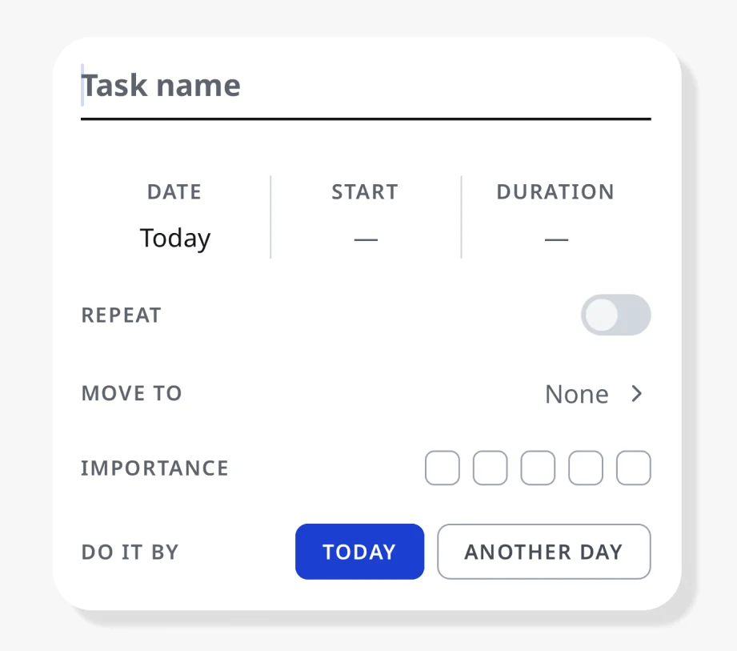

DECISION 1
Ask for a name, not a form
Adding a task takes a name. Duration and importance sit one step further in, because they’re what the reschedule reads later, not what you need to get started.
- NOT
- A full form on every task, so quick capture gets skipped.
- INSTEAD
- Progressive detail: optional fields that pay off when the day changes.